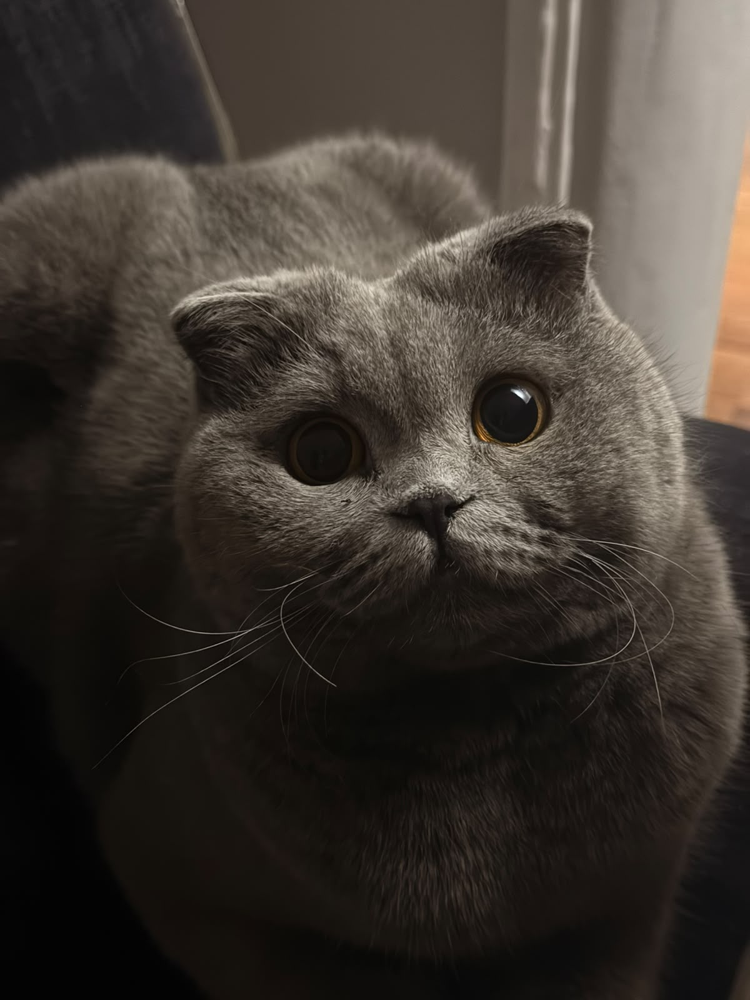

кто я?
меня зовут Аиша. мне 17 лет, я учусь на 2 курсе инфобеза. у меня есть кошка Буся, ей 3 года и 8 месяцев.
PERSONAL WEBSITE
хочу рассказать немного информации о себе.

меня зовут Аиша. мне 17 лет, я учусь на 2 курсе инфобеза. у меня есть кошка Буся, ей 3 года и 8 месяцев.
раньше я играла на фортепиано и занималась хором. я очень хотела бы продолжить этот путь, начав его заново и получить музыкальное образование.
свободное время я люблю проводить за:
фильмы и сериалы я очень люблю со всяким необычным и интересным сюжетом. из жанров люблю:
музыку я люблю разную, под настроение. под которую можно погрустить, повеселиться и просто спокойно послушать. из жанров люблю:
люблю разные игры, и компьютерные, и свободные. в основном люблю поиграть в сюжетные игры.
мой самый любимый сериал это ОСД (очень странные дела), который я пересматривала по несколько раз. увлечена его вселенной и знаю очень много про сам сериал, про каст, про историю, предысторию и т.д.
из фильмов и сериалов мне также нравятся:
я не смотрела многие популярные фильмы и сериалы, потому что часто уже знаю их сюжет из рассказов других людей. иногда кажется, что я их уже видела.